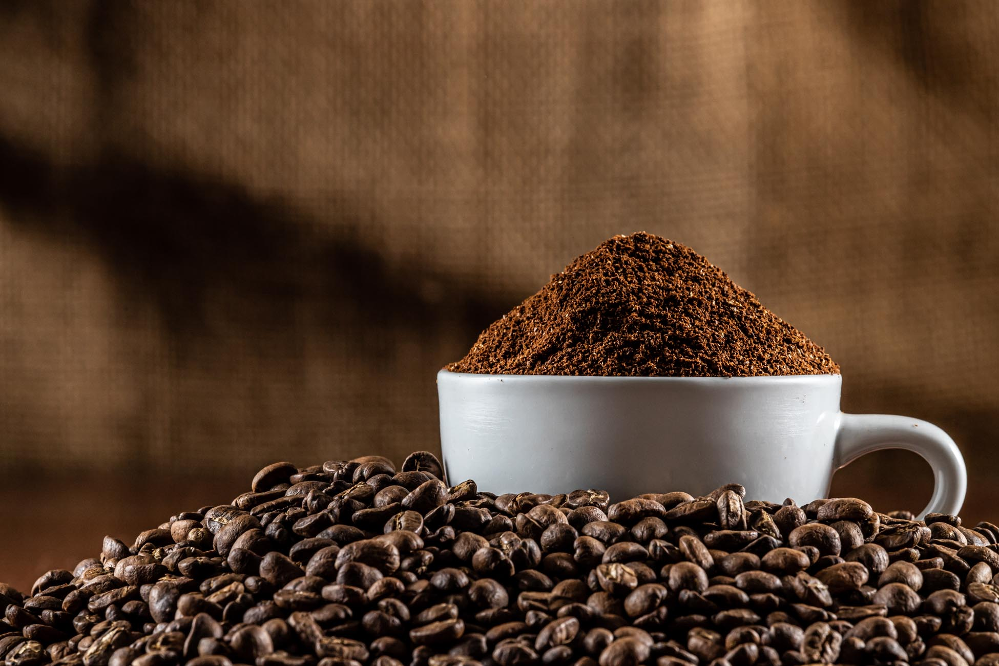

우리의 역사!
테소로 엔 그라노는 2005년 엘살바도르의 풍부한 커피 전통으로 유명한 우술루탄의 산티아고 데 마리아에서 설립되었습니다. 커피에 대한 깊은 애정과 우수성을 추구하는 기업가들이 모여 설립한 이 회사는 소규모 농장에서 고품질의 커피를 재배하여 세계 시장에 수출하겠다는 야심찬 목표를 가지고 출발했습니다.
테소로 엔 그라노는 창립 이래 뛰어난 맛과 품질로 세계 시장에 살바도르 커피를 알리는 데 주력해 왔습니다. 수년에 걸쳐 최첨단 기술과 지속 가능한 농업 관행에 투자하면서 사업 규모를 크게 확장해 왔습니다. 이러한 성장을 통해 테소로 엔 그라노는 품질에 대한 헌신과 지역 사회에 대한 긍정적인 영향력으로 커피 업계의 리더로 자리매김했습니다.
사명 선언문
테소로 엔 그라노의 사명은 전 세계 고객에게 살바도르 커피의 풍부함과 정통성을 반영하는 최고 품질의 커피를 제공하는 것입니다. 이 회사는 생산 및 수출의 모든 단계에서 높은 기준을 유지하기 위해 노력하며, 각 원두가 엄격한 품질 기준을 충족하도록 현지 생산자들과 긴밀히 협력하고 있습니다. 또한 테소로 엔 그라노는 환경과 커피 생산에 의존하는 농업 공동체 모두에게 도움이 되는 지속 가능한 관행을 장려하기 위해 노력합니다.
우리의 비전
테소로 엔 그라노의 비전은 고품질 커피 수출의 세계적인 기준이 되는 것입니다. 이 회사는 살바도르 커피 생산 및 마케팅의 우수성과 혁신적이고 지속 가능한 제품을 제공하는 능력으로 인정받기를 열망합니다. 테소로 엔 그라노는 정통적이고 뛰어난 커피를 찾는 로스터와 수입업체가 선택하는 파트너가 되고자 하며, 국제 시장에서 살바도르 커피의 성장과 인지도 향상에 크게 기여하고자 합니다.
우리의 가치
- 품질: 테소로 엔 그라노는 곡물 선택부터 제품의 최종 배송까지 모든 공정 단계에서 우수성을 위해 최선을 다하고 있습니다.
- 지속 가능성: 환경 친화적인 농업 및 비즈니스 관행을 구현합니다.
- 무결성: 당사는 정직하고 투명하게 운영하며 개방적이고 윤리적인 커뮤니케이션을 유지합니다.
- 혁신: 저희는 새로운 기술을 통해 프로세스와 제품을 개선하기 위해 끊임없이 노력하고 있습니다.
- 전통: 저희는 전통적인 커피 생산 기술을 소중히 여기고 보존하는 동시에 현대적인 개선 사항을 도입합니다.
비즈니스 라인
테소로 엔그라노는 커피 생산 및 수출에 주력하는 농업 산업 부문에서 운영되고 있습니다. 사업 부문에는 커피(골드), 양피지 커피 및 전체 커피 가공이 포함됩니다. 고품질 커피를 찾는 국제 시장에 전문적으로 서비스를 제공하며 엘살바도르 농장에서의 수확부터 전 세계 완제품 배송에 이르기까지 운영의 모든 측면에서 우수성을 위해 최선을 다하고 있습니다. 이 회사는 우르술루탄의 산티아고 데 마리아에 위치한 이점을 활용하여 이 지역의 기후 조건과 토양의 영향을 받은 커피를 제공함으로써 독특한 맛과 품질이 돋보이는 커피를 만들어냅니다. 테소로 엔 그라노는 우수성과 지속 가능성에 대한 헌신을 반영하는 제품 경험을 보장하기 위해 전 세계 고객 및 파트너와 강력한 관계를 구축하는 데 주력하고 있습니다.